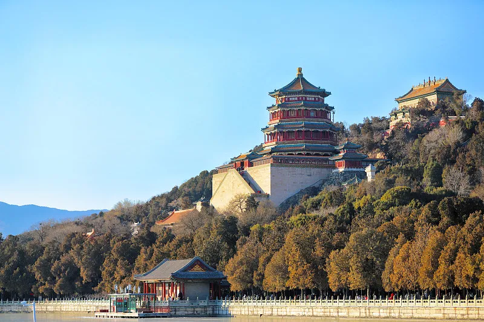
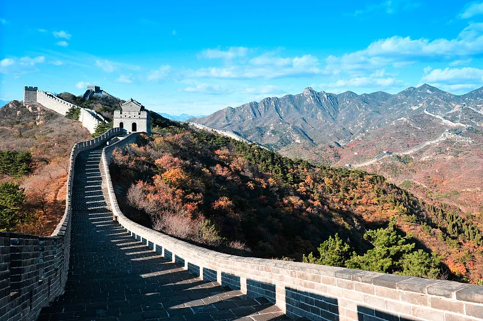

北京市（Beijing），简称“京”，古称燕京、北平，是中华人民共和国首都、直辖市、国家 中心城市、超大城市，国务院批复确定的中国政治中心、文化中心、国际交往中心、科技创新中心，中国历史文化名城和古都之一，世界一线城市。
又名紫禁城，是中国乃至世界上保存最完整，规模最大的木质结构古建筑群，被誉为“世界五大宫之首”。 内廷以乾清宫、交泰殿、坤宁宫后三宫为中心，以及东西两侧的东六宫和西六宫，是封建帝王与后妃居住之所，也就是俗称的“三宫六院”。
颐和园坐落于北京西郊，是中国古典园林之首，1998年12月2日被列入《世界遗产名录》。 由万寿山和昆明湖组成，全园以西山群峰为背景，建筑群与山湖形势融为一体，景色变幻无穷。
被称为“天下九塞”之一，是明长城景色中的精华，海拔高达1015米左右，也是居庸关的前哨。 分为南长城和北长城两部分，南长城有7处敌楼，游客相对较少，北长城有12处敌楼，比较难爬。 是游览北京的必到之处，尼克松、撒切尔夫人等三百多位世界知名人士曾登上长城。 是5A级景区，被联合国教科文组织列入《世界文化遗产名录》，热度仅次于天安门广场。
开放时间
09:00-21:00 (1月1日-12月31日 周一-周日)
开放时间
07:00-19:00 (04月01日-10月31日 周一-周日)
开放时间
全天 (1月1日-12月31日 周一-周日)
开放时间
04:52-19:46 (1月1日-12月31日 周一-周日)
开放时间
06:00-22:00；停止入场时间:21:00
开放时间
09:00-16:30(全天)；停止入场时间:16:00